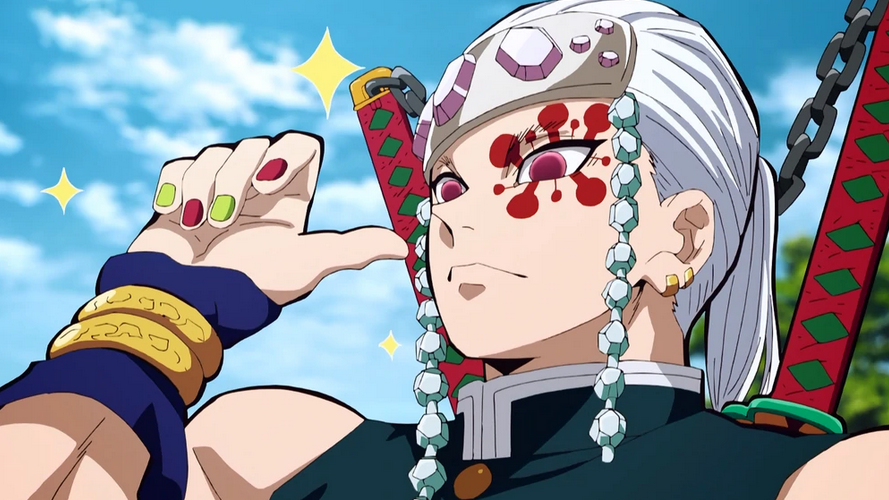
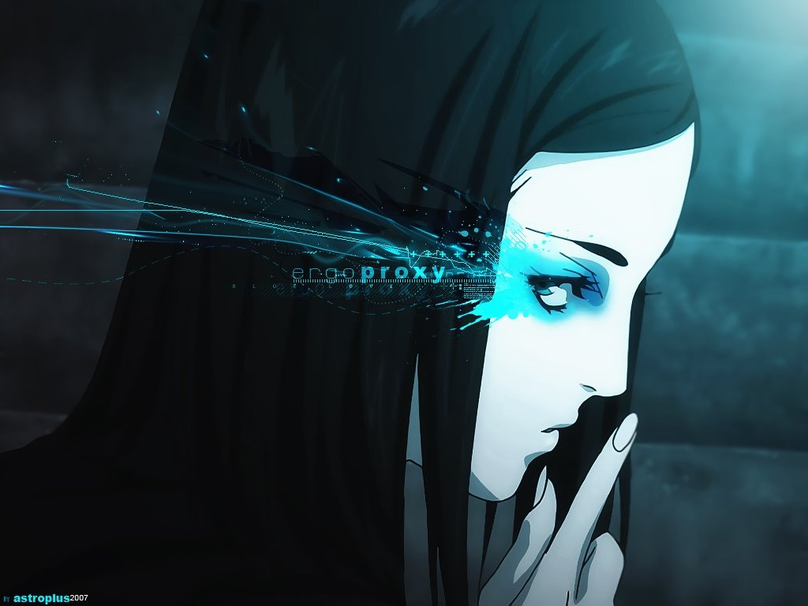

Tengen Uzui Pilar del sonido
Fue un personaje secundario importante en Kimetsu no Yaiba. Tengen fue un Cazador de Demonios y el antiguo Pilar del sonido del Cuerpo de Exterminio de Demonios.Tengen poseia una velocidad y fuerza sobrehumanas, esto hizo que se convirtiese en el segundo pilar más fuerte previo a su retiro y se convirtió en el pilar mas rápido de la historia.
Velocidad sobrehumana: Tengen fue considerado el pilar mas rápido de la historia y por lo tanto, también tiene unos reflejos sobrehumanos. A menudo parecía que se esta teletransportando.En particular, Tengen fue lo suficientemente rápido como para decapitar a Daki, antes de que pudiera procesar lo que había sucedido.
Seguir leyendo...
Ergo proxy un anime que debes ver
La historia transcurre en una ciudad llamada Romdeau, construida para proteger a sus habitantes del ambiente devastador en el cual el planeta Tierra ha caído. Allí, los hombres (considerados "ciudadanos modelo") y AutoReivs, conviven en paz bajo un sistema completamente administrativo. Tal utopía se ve afectada por una serie de asesinatos cometidos por AutoReivs fuera de control infectados con el virus Cogito, lo cual pone en peligro el delicado equilibrio del orden social; mientras tanto, tras bastidores, el gobierno dirige experimentos ocultos de una forma humanoide llamada Proxy, la cual se cree que tiene la llave para la supervivencia de la especie humana
Re-L Mayer es asignada para investigar una serie de asesinatos con su AutoReiv, Iggy; durante estas investigaciones aparecen dos criaturas desconocidas con gran poder. Ella se da cuenta de que el Proxy está involucrado, aunque desconoce el significado real de esa palabra. Por otra parte, el otro protagonista, el inmigrante Vincent Law, está de una manera conectado con el Proxy. Tras salir del domo, ambos protagonistas viajan alrededor del mundo visitando los domos para descubrir el significado real de los Proxy.
Seguir leyendo...
Publicidad
Aprende a programar "piton" con la casi ingeniera Saez, no se sabe de donde saco el titulo pero digamos que es buena persona.
Si no les gusta la ingeniera, tenemos al señor Juan maneja diversos programas aunque se aburre rapido, tal vez se aburra de ti
Seguir leyendo...
Spokon
El anime Spokon presenta una serie de valores que servirán a los más jóvenes en su camino desde niño pasando por la adolescencia para convertirse en adulto
Seguir leyendo...
Isekai
El anime gira en torno a un personaje o un grupo de personajes de la Tierra que de manera intencional o accidental termina en un universo paralelo
Seguir leyendo...